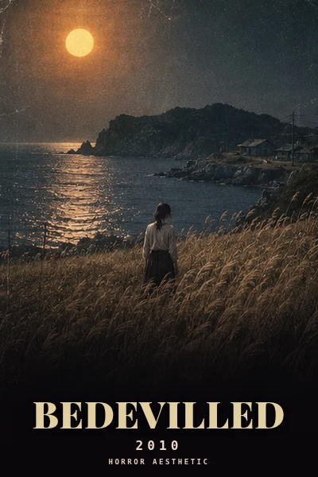

БедевилдBedevilled (2010)
Режиссёр: Чан Чхоль-су · Корейский хоррор, Триллер, МестьDirector: Jang Cheol-soo · Korean horror, Thriller, Revenge
⚠ Жестокость и сексуальное насилиеBrutality and sexual violence
Городская служащая приезжает на остров детства и не замечает, что там давно творится зло.A city clerk visits the island of her childhood and fails to notice the evil that has long been happening there.
Хэ-вон, банковская служащая из Сеула, приезжает на маленький остров, где живёт её подруга детства Бок-нам. Остров почти пуст: там несколько стариков и мужчин, которые давно живут по своим законам.
Первая половина картины тянется как тяжёлая драма: Бок-нам терпит унижение и насилие, а Хэ-вон, героиня, за которой следит зритель, делает вид, что ничего не видит. Режиссёр не торопится, и от этого терпеть труднее.
Потом фильм ломается, и начинается кровавая месть. Но лучшее в нём не расправа, а вопрос к зрителю: что значит быть свидетелем и ничего не сделать.
Фильм жестокий и местами невыносимый, смотреть его нужно с осторожностью. Это одна из самых сильных корейских работ десятилетия.
Hae-won, a bank clerk from Seoul, visits a small island where her childhood friend Bok-nam lives. The island is nearly empty, home to a few old people and men who have long lived by their own laws.
The first half drags on like a heavy drama: Bok-nam endures humiliation and violence, while Hae-won, the heroine the viewer follows, pretends not to see. The director takes his time, and that makes it harder to bear.
Then the film breaks, and bloody revenge begins. But the best thing in it is not the reprisal but the question put to the viewer: what does it mean to be a witness and do nothing.
The film is brutal and in places unbearable, and should be watched with caution. It is one of the strongest Korean works of the decade.